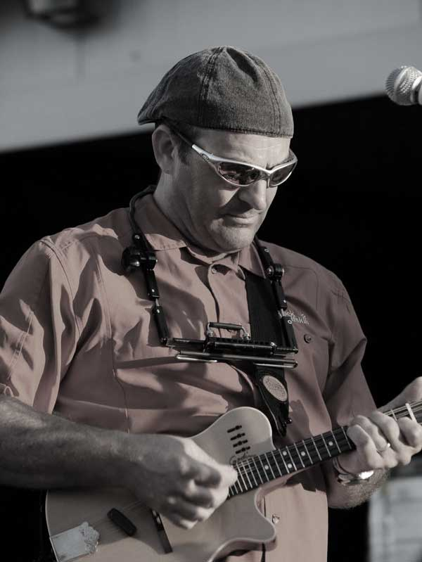
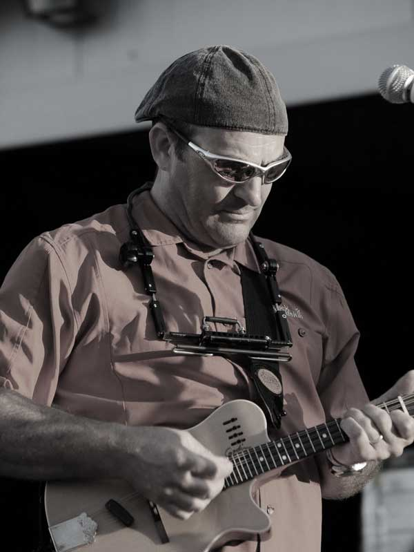
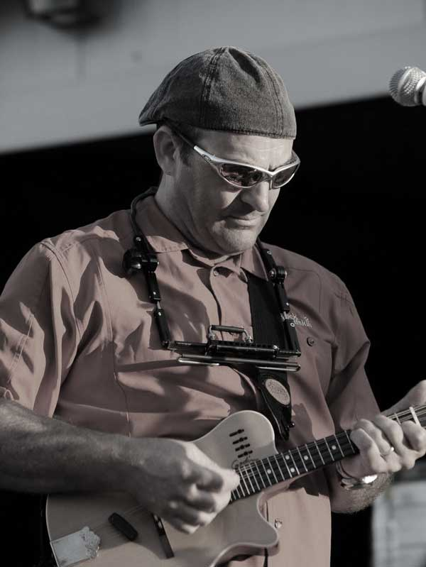
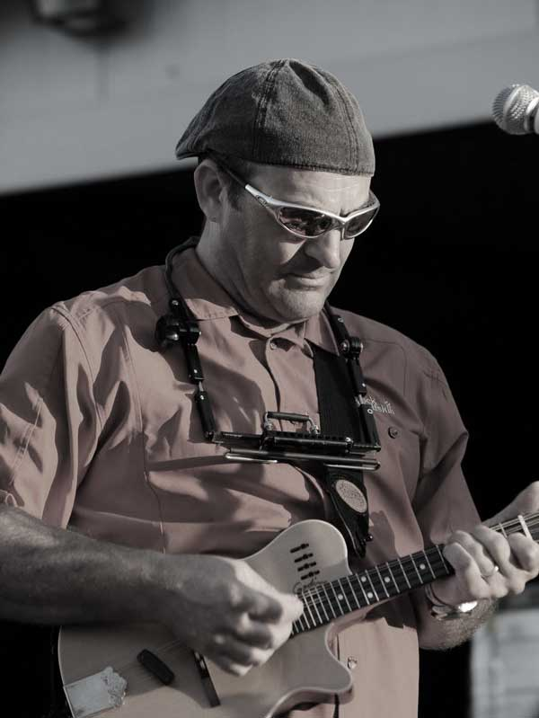

 


Ihr Name ist ironisch und kokett. Denn ihr grooviger Sound entspannt und hebt definitiv die Stimmung. Seit bald 20 Jahren spielen «Beautoggs & The Lifters», die fünfköpfige Cover-Band aus dem Raum Basel, den Blues und geben dem Rock tüchtig Zunder – ganz nach Lust und Laune und wie es ihnen gefällt. Ihr Repertoire besticht in erster Linie durch eigenständige Interpretationen von «Good old times»-Klassikern. Ob Lovin’ Spoonful, ZZ Top oder Cash, ob Blues Klassiker, Rock oder Ballade – Hauptsache live und leidenschaftlich.
Ursprünglich von den beiden Musikern Raffael Meyer (Vocals/Guitar/Mandoline/ Harps) und Peter Schenk (Vocals/Bass) gegründet, haben sich «Beautoggs & The Lifters» in den vergangenen zwei Jahrzehnten einen hervorragenden Ruf als exzellenter Live-Act an Festivals, in Clubs oder auch bei Privatanlässen erspielt und können auf eine ebenso begeisterte wie treue Fangemeinde bauen.
«Beautoggs & The Lifters», das sind heute nebst dem Gründungsduo Meyer/Schenk Heinz Sommerhalder (Guitar/Vocals), Reto Reber (Drums/Vocals) und Roman Schälle (Keyboards/Hammond/Vocals). In den ersten Jahren als reine Akkustik-Formation unterwegs, stehen bei «Beautoggs & The Lifters» nach wie vor Coverversionen aus den Sparten Rock, Pop, Blues, Country und Folk auf der Setliste – «handmade music», gradlinig, direkt und unverfälscht. In den letzten Jahren wurden die Instrumente zwar vermehrt unter Strom gestellt, doch ihrem musikalischen Credo blieb die Band stets treu. Und so stehen «Beautoggs & The Lifters» für einen unverfälschten Sound ohne Effekthascherei – mit markigen Riffs, perlenden Soli, mehrstimmigen Gesangsparts, warmen Hammond-Akkorden und farbigen Pianolicks. Der Blues bleibt ihre Wurzel, aus der sich die Band ständig weiterentwickelt. «Beautoggs & The Lifters» sind und bleiben darum immer für eine Überraschung gut…